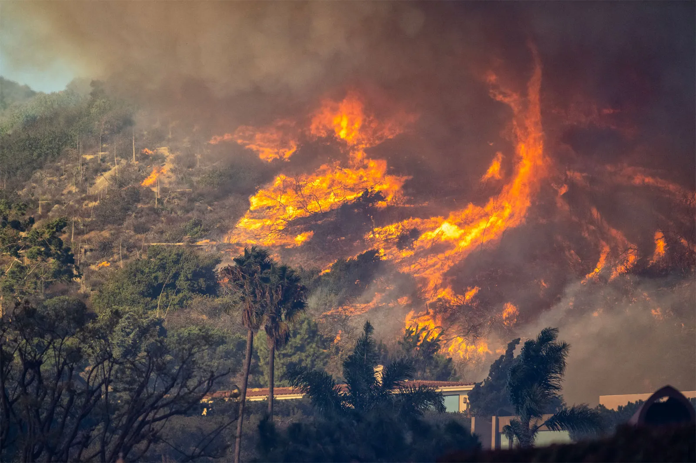
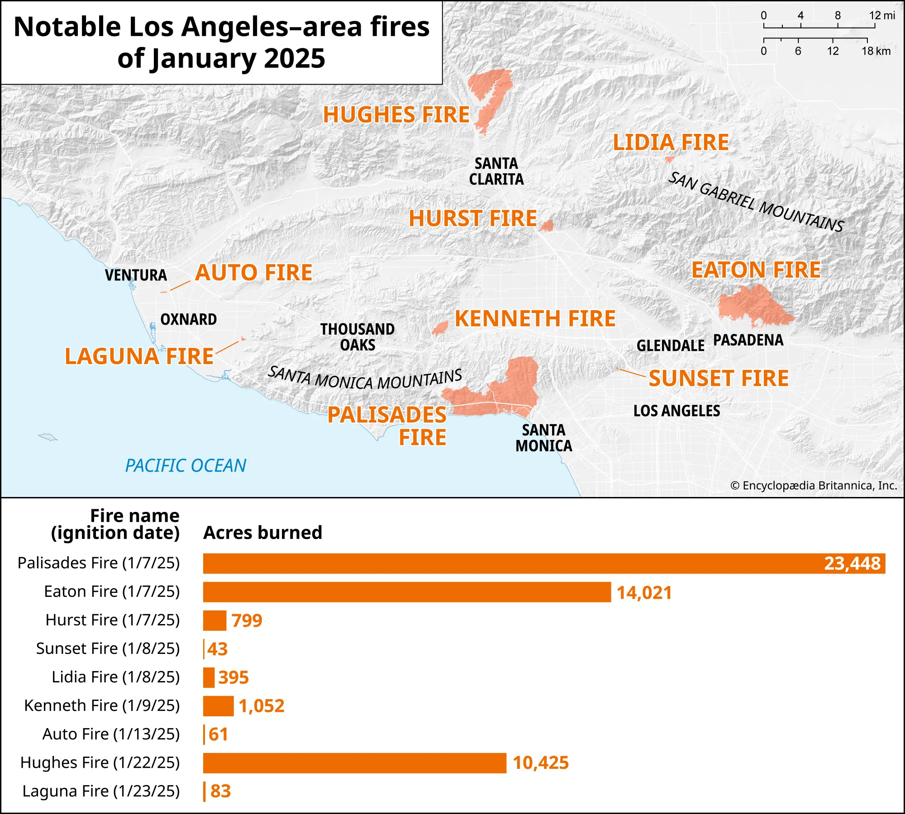
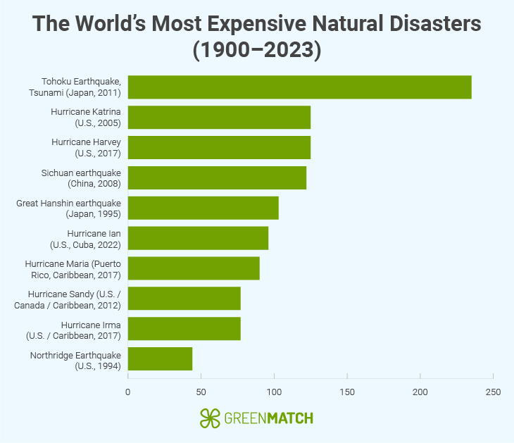
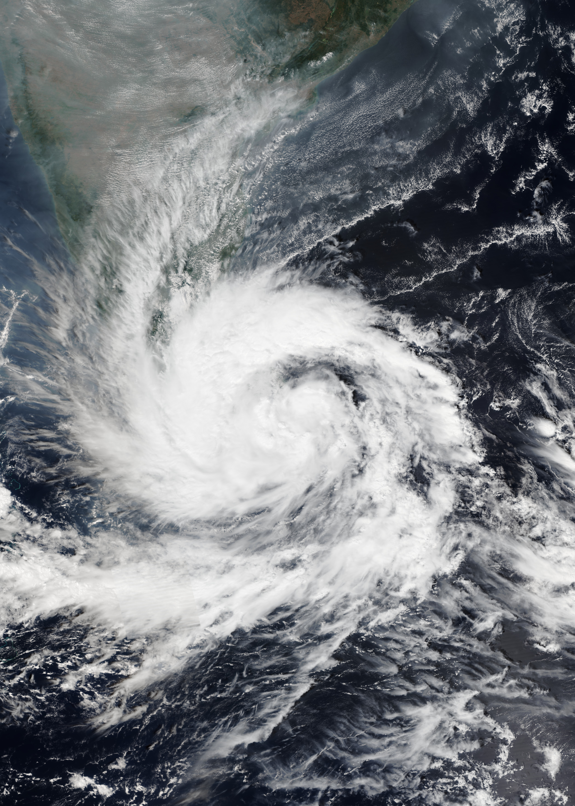
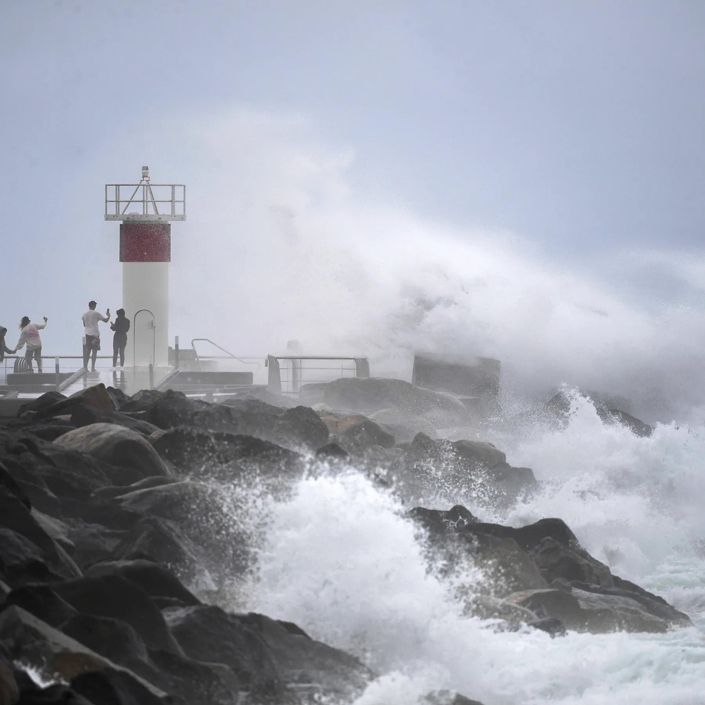
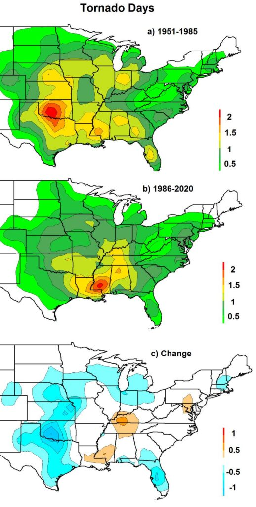

Here's how weather impacted the world's regions in 2025
By Claire Meyer
Jan. 14, 2026
Record-breaking heatwaves, cyclones, heavy rainfall, and wildfires made 2025 one of the costliest years globally for climate disasters. Damage reached approximately $224 billion—only $108 billion of which was covered by insurers, according to new numbers from multinational insurance firm Munich Re.
Around 17,200 people were killed in natural disasters worldwide last year—significantly more than in 2024 (11,000 people killed), but below the 10-year average of 17,800.
Non-peak perils such as wildfires and severe storms drove up insured catastrophe losses last year. Peak perils, including major hurricanes and earthquakes, still affected some regions, but the number of non-peak events significantly increased overall costs, according to data from insurer Howden.
The reports largely did not account for extreme heat, drought, and other prolonged climate-related challenges, even though parts of the world experienced record-breaking temperatures last year.
Here’s how different regions were affected in 2025.
Asia
Nearly a third of global economic losses from natural disasters last year occurred in Asia. Losses cost around $73 billion, but only $9 billion was insured, Munich Re reported.
The March 2025 earthquake in Myanmar, Thailand, China, and Vietnam was the second largest natural disaster in 2025, the insurer found, with 4,500 fatalities, $12 billion in overall losses, and $1.5 billion in insured losses.
“The earthquake—which occurred in the trembler-prone region home to the megacity of Mandalay—happened along the Sagaing Fault, which runs through Myanmar from north to south,” Munich Re said. “Of the overall losses amounting to approximately US$ 12 billion, only a small share was insured. Even in Bangkok—approximately 1,000 km from the epicentre—there was earthquake damage mainly attributable to the deep and soft alluvial soil beneath the Thai capital, which amplifies tectonic activity.”
The Myanmar earthquake also had the highest number of fatalities of any natural disaster last year, followed by an earthquake in Afghanistan in early September.
In the northwestern Pacific, most tropical cyclones tracked south, sparing Japan but hitting more Southeast Asian countries, including Thailand, Vietnam, Indonesia, the Philippines, and China.
Tropical Cyclone Ditwah was Asia-Pacific’s third costliest disaster last year, devastating Sri Lanka and parts of India. Intense rainfall led to extreme flooding and landslides. Approximately 650 people were killed in the storm that caused total losses of around $4 billion.
“In addition, the storms coincided with a very intense rainy season,” Munich Re said. “Many regions experienced multiple downpours, with hundreds of mm of precipitation falling quickly; 1 mm of rainfall corresponds to 1 litre per square metre. This led to severe flooding in several countries.”
In Australia, 2025 was the second most expensive year since 1980 for overall losses from natural disasters. Cyclone Alfred in February and flooding in May resulted in major damage, followed by losses during thunderstorm season in October and November.
United States
For the first time in a decade, no hurricanes hit U.S. shores in 2025. But U.S. disaster damage costs reached above $115 billion anyway, driven by the Los Angeles wildfires and a series of severe thunderstorms, according to non-profit group Climate Central.
More than half of the disaster costs for the year—upwards of $61 billion—were tied to the Los Angeles wildfires. Insured losses from the wildfires reached $35 billion or higher; more than 15,000 structures were destroyed or damaged. Thirty people died in the fires.
The LA County widlfires were the most expensive wildfire disaster recorded, Munich Re said.

A picture of fire buring in Los Angeles in 2025, and a map of where the fires occured. Multimedia courtesy of Britannica.

Elsewhere, severe storms caused largescale damage across broad swaths of the United States. Climate change is causing heavier downpours and intensifying storms, and increased property development has expanded the amount of losses possible, according to The New York Times. For every 1 degree Celsius (1.8 degrees Fahrenheit) of global warming, the air can hold about 7 percent more moisture, resulting in more damaging storms. Hail may form less frequently, but when it does, hailstones are growing larger. Tornado outbreaks are changing location, pushing outside the traditional “Tornado Alley” of the Great Plains toward the Southeast and other states that are less prepared for them. Those shifting risks have also had significant effects on insurance and home affordability.
“The increasing number and cost of weather and climate disasters in the U.S. result from a combination of increased exposure (more assets at risk), vulnerability (how much damage a hazard of given intensity causes at a location), and changes in the frequency of some types of extreme weather that lead to billion-dollar disasters,” Climate Central said.
Climate Central took over the “billion-dollar disaster” database last year after the Trump administration announced the government would stop tracking this data, the Times reported. The current database builds off of decades of data from the U.S. National Oceanic and Atmospheric Administration.
Hurricane Melissa was the strongest storm on record to hit Jamaica. Insured losses are estimated in the $3 billion range, and overall losses could exceed $10 billion, according to Munich Re.
“It was one of the strongest hurricanes to make landfall since record-keeping began,” the insurer said. “Melissa tracked slowly through the Caribbean, absorbing energy from the very warm waters. The storm caused devastating destruction in Jamaica and severely impacted Cuba. Although advance warnings enabled many people to evacuate, some 100 people died nevertheless.”
Europe
Overall, Europe got off lightly in 2025, Munich Re said. Total natural disaster losses came in at about $11 billion, driven by a severe cold wave in Turkey and hailstorms in Austria, France, and Germany.
Storm Eowyn was the UK’s most powerful windstorm in the past decade. A 100-mph gust was recorded in Northern Ireland. The strong wind speeds resulted in higher average costs per claim compared to other recent wind events, Howden reported.
Natural disaster statistics

Zooming out: the world's most expensive all-time natural diasters. Chart by Greenmatch, a solar energy company.
Maps and Images

An image of Tropical Cyclone Ditwah, which devastated Myanmar last year. Photo courtesy of Wikimedia Commons.

An image of Tropical Cyclone Alfred splashing water at Spit on the Seaway on Australia's Gold Coast. [Jono Searle/AAP Image via AP]

A map of how tornado alley has shifted in the United States of America over time. Map courtesy of Team Rubicon USA.

Storm Eowyn's tree damage in the UK. Photo courtesy of Getty Images.
A note from our newsroom
Here are some global resources for those currently struggling with the impacts of natural disasters.
-
The International Rescue Committee is an organization that responds to humanitarian crises, like natural disasters, and helps rebuild communities. The committee is currenly active in over 40 countries and 29 U.S. cities, according to their website.
View the International Rescue Committee's website here.
-
Team Rubicon USA is a non-governmental organization that serves communities across the across the United States by helping through aspects of pre-disaster mitigation, post-disaster response and long-term recovery. Some of the ways the organization helps includes home repair and debris management following natural disasters, according to their website.
View Team Rubicon USA's website here.